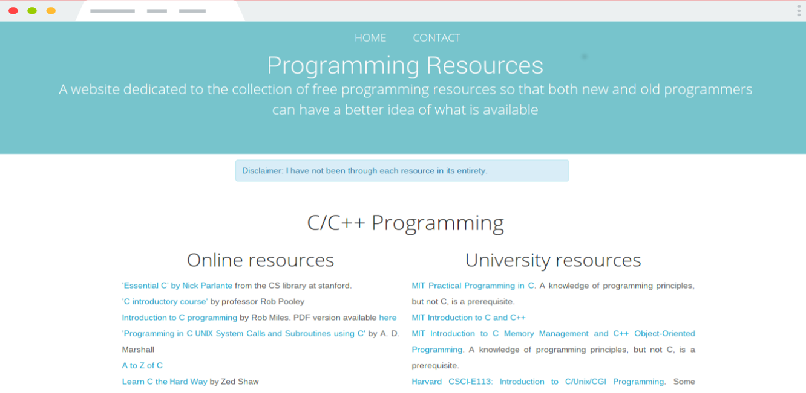
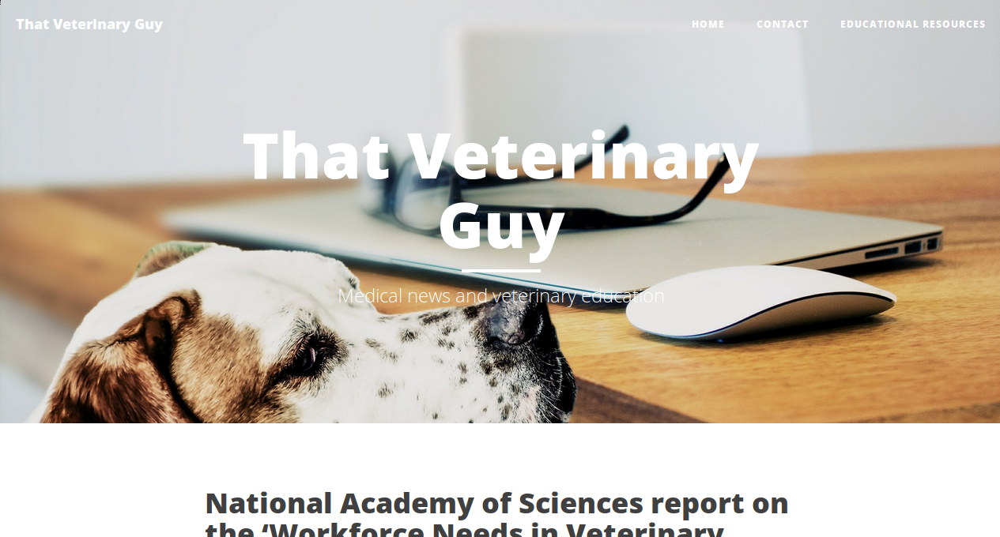
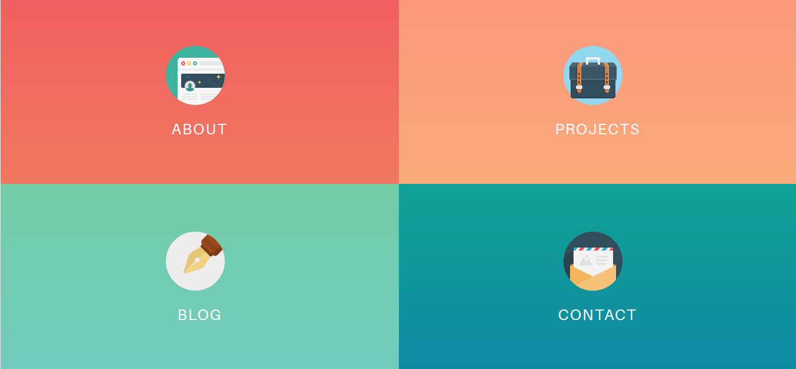

stephen
History of here
08-11-2018
This blog has just moved from GitHub Pages to Squarespace. It got me thinking of why I started a blog (and some other websites) in the first place. I hoped it would encourage me to write more and improve doing so. My goal was to encourage myself to write more and to improve my writing skills. I intended to write about books I read, things I learned, and aspects of my professional life.I planned to write about books I read, things I’d learnt and aspects of my professional life.
However, I realized that I spent much more time tweaking the websites' appearance, hosts, and content management systems/‘code’ instead of writing.
Currently, there are only four mediocre articles on this blog, despite changing hosts four times. I’ve invested orders of magnitude more time fiddling with intricacies than focusing on writing. My journey took me from DreamHost to Digital Ocean, then GitHub Pages, and now to Squarespace. There are four mediocre articles on this blog. I have changed host 4 times. Orders of magnitude more time has been spent fiddling with intracacies than its main purpose. DreamHost, Digital Ocean, GitHub Pages and now to Squarespace.
It started almost a decade ago with a one-click WordPress setup in DreamHost. I later moved to Digital Ocean, setting up WordPress manually. I then moved over to Digital Ocean with Wordpress manually setup by me. I thought this was overkill for my needs so I moved to simple static html. Realising this was overkill, I shifted to simple static HTML, which had the opposite effect of what I intended. Brackets and inline html became the norm. While messing with static html I made a simple website called programmingresourc.es. This was basically a list of good resources I had come across in relation to ‘learning programming’.

I had started using markdown and felt this would be my saviour. ‘It will force me to focus on writing since design and the website internals would be separate from posts’. So I switched from static html to a static site generator that utilised markdown called Jekyll. No more embedded HTML when writing. Just plain beautiful markdown. I made an ugly website called thatveterinaryguy.co.uk with Jekyll.

What happened is evident. I spent time changing Jeckyll themes, changing fonts, changing colours. Just as I had done with Wordpress and static HTML before it. There was still an absence of writing despite the number of hours spent on website related activities. I wish I had screenshots of every iteration, from the garish to the minimal. All of which I thought was a good idea at the time.

Website generated by emacs and org-mode In a final attempt to focus I used Emacs org-mode to generate a very plain simple website that could easily be updated with markdown-like org files. Then I stopped using emacs.
I switched to Squarespace in the hope this will focus me. Nice stock themes. An app where I can focus on writing (that even includes markdown) while the WYSIWYG editor stays out of your way. Yet, the odds seem stacked against me.
The procrastination around writing stems from my difficulty in creating content I find worthwhile. When I do write, I am hypercritical and embarrassed. The main advice I see for those looking to improve is to write as much as possible. So, from now on, I’m going to write.